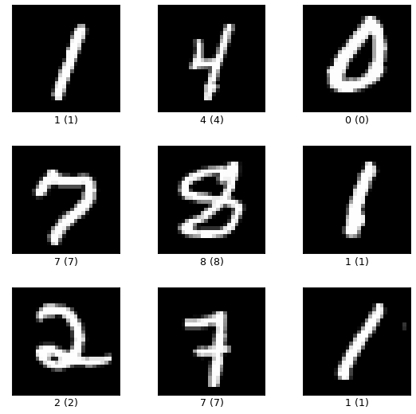
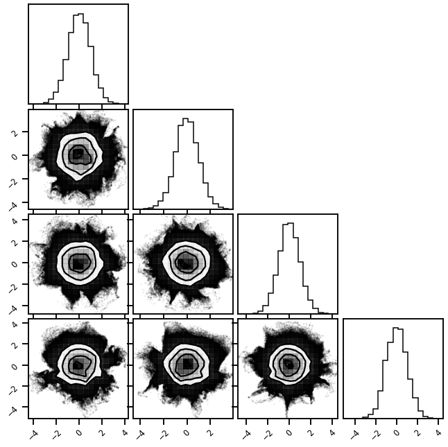
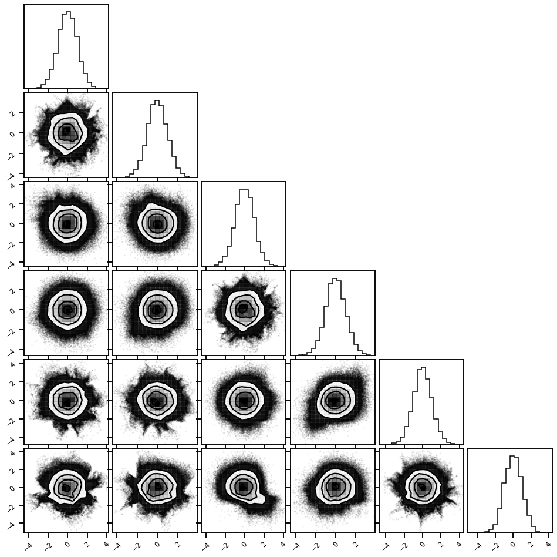
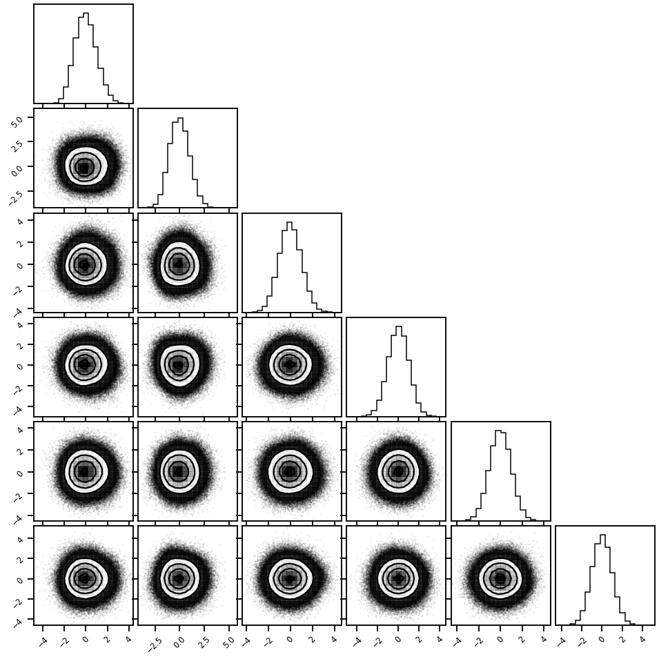
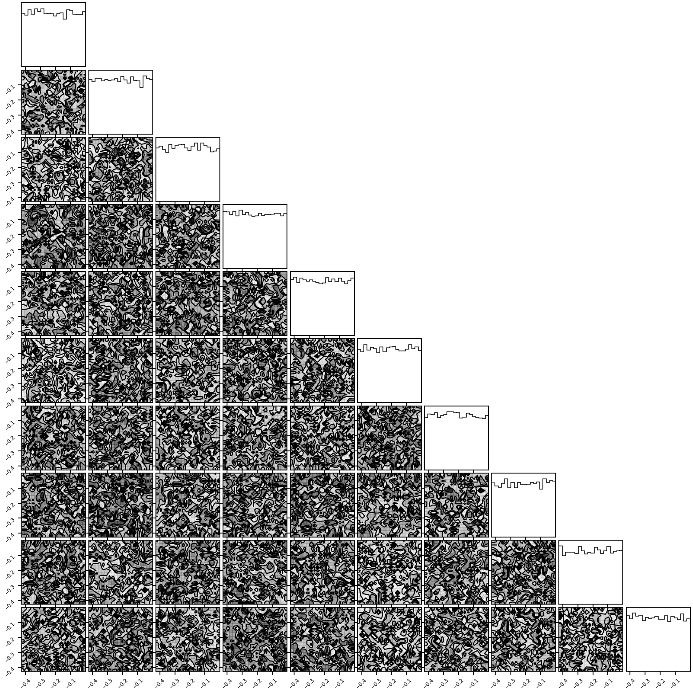
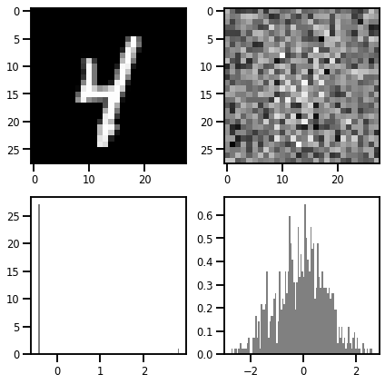
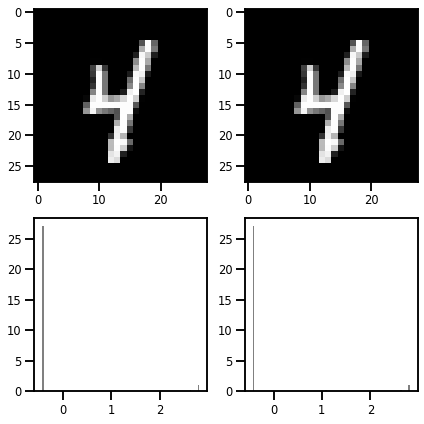
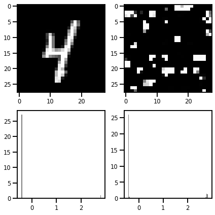

# @title Install Packages
try:
import sys, os
from pyprojroot import here
# spyder up to find the root
root = here(project_files=[".here", "setup.py"])
# append to path
sys.path.append(str(root))
except ModuleNotFoundError:
import os
os.system("pip install objax chex tfds-nightly tf-nightly einops")
os.system("pip install git+https://github.com/IPL-UV/rbig_jax.git#egg=rbig_jax")
Package Preamble¶
# jax packages
import jax
import jax.numpy as jnp
from jax.config import config
import chex
config.update("jax_enable_x64", False)
# datasets
import tensorflow_datasets as tfds
import tensorflow as tf
import numpy as np
from functools import partial
from sklearn.preprocessing import StandardScaler
# library parameters
from rbig_jax.data import get_classic
from rbig_jax.plots import plot_info_loss, plot_joint, plot_joint_prob
# logging
import tqdm
import wandb
# plot methods
import matplotlib.pyplot as plt
import seaborn as sns
sns.reset_defaults()
sns.set_context(context="talk", font_scale=0.7)
%load_ext lab_black
%matplotlib inline
%load_ext autoreload
%autoreload 2
The lab_black extension is already loaded. To reload it, use:
%reload_ext lab_black
The autoreload extension is already loaded. To reload it, use:
%reload_ext autoreload
Data¶
We’re going to using the MNIST dataset. It’s a simple dataset with a single channel image and 28x28. So overall it’s 60Kx28x28x1.
We’re going to use the numpy standard for the images.
B,H,W,C
where:
B- batch sizeH- heightW- widthC- channels
from sklearn.preprocessing import StandardScaler
# normalize images
def normalize_img(image, label):
"""Normalizes images: `uint8` -> `float32`."""
return tf.cast(image, tf.float32) / 255.0, label
def rescale_image(img, scaler):
H, W, C = img.shape
img = img.reshape((1, H * W * C))
img = scaler.inverse_transform(img)
img = img.reshape((H, W, C))
return img
# DATA, CIFAR10
ds, ds_info = tfds.load(
"mnist", split="train", as_supervised=True, shuffle_files=True, with_info=True
)
ds = ds.map(normalize_img, num_parallel_calls=tf.data.experimental.AUTOTUNE)
# take some examples
B = 10_000
# take 10 samples from the dataset
ds_sample = ds.take(B)
fig = tfds.show_examples(ds, ds_info)

# extract all images
X = [x[0] for x in tfds.as_numpy(ds_sample)]
# stack them in a new batch axes
X = np.stack(X).astype(np.float32)
print(X[0].min(), X[0].max())
# add some noise
X += 0.001 * np.random.rand(*X.shape)
# normalize
from sklearn.preprocessing import StandardScaler
X = X.reshape(-1, 1)
x_scaler = StandardScaler()
X = x_scaler.fit_transform(X)
X = X.reshape((B, 28, 28, 1))
# convert to jax array
X = jnp.array(X)
0.0 1.0
plt.imshow(rescale_image(X[0], x_scaler))
<matplotlib.image.AxesImage at 0x7f904c2cf640>
Reshaping¶
from rbig_jax.transforms.reshape import Squeeze
Demo¶
# layer params
filter_shape = (2, 2)
collapse = "spatial"
key = jax.random.PRNGKey(123)
# initialize layer
squeeze_layer = Squeeze(filter_shape, collapse)
# initialize params and functions
_, f, inv_f = squeeze_layer(key, X.shape)
Forward¶
X_ms_l1, _ = f((), X)
X_ms_l1.shape
(1960000, 4)
Inverse¶
X_approx, _ = inv_f((), X_ms_l1)
chex.assert_tree_all_close(X_approx, X)
RBIG Transformation¶
from rbig_jax.transforms.rotation import InitPCARotation
from rbig_jax.transforms.histogram import InitUniHistUniformize
from rbig_jax.transforms.block import InitRBIGBlock
import corner
Transformation¶
# layer params
filter_shape = (2, 2)
collapse = "spatial"
key = jax.random.PRNGKey(123)
# initialize layer
reshape_layer = Squeeze(filter_shape, collapse)
# initialize params and functions
_, f_l1, inv_f_l1 = reshape_layer(key, X.shape)
X_ms_l1, _ = f_l1((), X)
X_ms_l1.shape
(1960000, 4)
fig = corner.corner(X_ms_l1)
WARNING:root:Too few points to create valid contours
WARNING:root:Too few points to create valid contours
WARNING:root:Too few points to create valid contours
WARNING:root:Too few points to create valid contours
WARNING:root:Too few points to create valid contours
WARNING:root:Too few points to create valid contours
Model¶
support_extension = 10
alpha = 1e-5
precision = 100
nbins = 100
# initialize histogram transformation
uni_uniformize = InitUniHistUniformize(
n_samples=X_ms_l1.shape[0],
nbins=nbins,
support_extension=support_extension,
precision=precision,
alpha=alpha,
)
# initialize rotation transformation
rot_transform = InitPCARotation()
# initialize marginal gaussianization
eps = 1e-5
fit_transform_func, forward_f, grad_f, inverse_f = InitRBIGBlock(
uni_uniformize, rot_transform, eps
)
# optional, compiles the function to make it faster
fit_transform_func_jitted = jax.jit(fit_transform_func)
forward_f_jitted = jax.jit(forward_f)
grad_f_jitted = jax.jit(grad_f)
inverse_f_jitted = jax.jit(inverse_f)
%%time
n_layers = 50
params = []
losses = []
ilayer = 0
X_g = X_ms_l1
while ilayer < n_layers:
# compute
X_g, layer_params = fit_transform_func_jitted(X_g)
# increment
ilayer += 1
params.append(layer_params)
CPU times: user 48.8 s, sys: 1min 7s, total: 1min 56s
Wall time: 12.2 s
import corner
fig = corner.corner(X_g)

# inverse transform
X_g_ms_l2, _ = inv_f_l1((), X_g)
# layer params
filter_shape = (4, 4)
key = jax.random.PRNGKey(123)
# initialize layer
reshape_layer = Squeeze(filter_shape, collapse)
# initialize params and functions
_, f_l2, inv_f_l2 = reshape_layer(key, X.shape)
X_ms_l2, _ = f_l2((), X_g_ms_l2)
X_ms_l2.shape
(490000, 16)
fig = corner.corner(X_ms_l2[:, :6])

%%time
n_layers = 10
params = []
losses = []
ilayer = 0
X_g = X_ms_l2
while ilayer < n_layers:
# compute
X_g, layer_params = fit_transform_func_jitted(X_g)
# increment
ilayer += 1
params.append(layer_params)
CPU times: user 4.08 s, sys: 3.45 ms, total: 4.08 s
Wall time: 4.07 s
fig = corner.corner(X_g[:, :6])

Multiple Levels¶
# layer params
filter_shapes = [(2, 2), (4, 4), (7, 7), (14, 14), (28, 28)]
key = jax.random.PRNGKey(123)
# initialize layer
reshape_layer = Squeeze((28, 28), "spatial")
# initialize params and functions
_, f, inv_f = reshape_layer(key, X.shape)
X_ms_l1_, _ = f((), X)
X_ms_l1_.shape
(10000, 784)
fig = corner.corner(X.reshape((B, 28 * 28 * 1))[:, :10])

Full Example¶
Data¶
from mpl_toolkits.axes_grid1 import ImageGrid
fig = plt.figure(figsize=(10.0, 10.0))
grid = ImageGrid(
fig,
111, # similar to subplot(111)
nrows_ncols=(5, 5), # creates 2x2 grid of axes
axes_pad=0.1, # pad between axes in inch.
)
for i, ax in enumerate(grid):
img = rescale_image(X[i], x_scaler)
ax.imshow(img, cmap="gray")
plt.tight_layout()
plt.show()
<ipython-input-45-c4f4548f2d04>:15: UserWarning: This figure includes Axes that are not compatible with tight_layout, so results might be incorrect.
plt.tight_layout()
Model Training¶
t = (1, 2, 3, 4)
t[1:]
(2, 3, 4)
# layer params
filter_shapes = [(2, 2), (4, 4), (7, 7), (14, 14), (28, 28)]
n_layers = 30
params = []
losses = []
ilayer = 0
X_g = X
plot_layers = False
if plot_layers:
fig = corner.corner(X_g.reshape((B, 28 * 28 * 1))[:, :5])
with tqdm.tqdm(filter_shapes) as pbar:
for i_mscale, ifilter in enumerate(pbar):
# pbar.set_description(f"Multiscale Level: {i_mscale+1}, Filter: {ifilter}")
# initialize layer
reshape_layer = Squeeze(ifilter, "spatial")
# initialize params and functions
_, f, inv_f = reshape_layer((), X.shape)
# save functions
ms_params = {"reshape_f": f, "reshape_invf": inv_f}
# transform data
X_g, _ = f((), X_g)
pbar.set_description(
f"Multiscale Level: {i_mscale+1}, Filter: {ifilter}"
f", Size: ({X_g.shape[0]:_},{X_g.shape[1]:_})"
)
# Gaussianize
layer_params = []
while ilayer < n_layers:
# compute
X_g, ilayer_params = fit_transform_func_jitted(X_g)
# increment
ilayer += 1
layer_params.append(ilayer_params)
ms_params["rbig_params"] = layer_params
# save dictionary of params
params.append(ms_params)
# invert multiscale
X_g, _ = inv_f((), X_g)
if plot_layers:
fig = corner.corner(X_g.reshape((B, 28 * 28 * 1))[:, :5])
Multiscale Level: 5, Filter: (28, 28), Size: (10_000,784): 100%|██████████| 5/5 [00:19<00:00, 3.99s/it]
X_g.shape
(10000, 28, 28, 1)
fig, ax = plt.subplots(ncols=2, nrows=2, figsize=(6, 6))
ax[0, 0].imshow(rescale_image(X[0], x_scaler), cmap="gray")
ax[0, 1].imshow(X_g[0], cmap="gray")
ax[1, 0].hist(X[0].ravel(), bins=100, density=True, color="gray")
ax[1, 1].hist(X_g[0].ravel(), bins=100, density=True, color="gray")
plt.tight_layout()
plt.show()

Inversion¶
Convert to Multiscale
Do Inverse Transformation
Invert to Original Scale
Repeat for all scales
X_approx = X_g
with tqdm.tqdm(params[::-1]) as pbar:
for i_ms_layer, iparam in enumerate(pbar):
# Convert to Multiscale transformation
X_approx, _ = iparam["reshape_f"]((), X_approx)
# Loop Through RBIG (in reverse)
for i_layer_param in reversed(iparam["rbig_params"]):
# inverse transformation
X_approx = inverse_f_jitted(i_layer_param, X_approx)
# Undo to Multiscale transformation
X_approx, _ = iparam["reshape_invf"]((), X_approx)
100%|██████████| 5/5 [00:01<00:00, 4.21it/s]
fig, ax = plt.subplots(ncols=2, nrows=2, figsize=(6, 6))
ax[0, 0].imshow(rescale_image(X_approx[0], x_scaler), cmap="gray")
ax[0, 1].imshow(rescale_image(X[0], x_scaler), cmap="gray")
ax[1, 0].hist(X[0].ravel(), bins=100, density=True, color="gray")
ax[1, 1].hist(X_approx[0].ravel(), bins=100, density=True, color="gray")
plt.tight_layout()
plt.show()

mse = jnp.mean((X_approx - X) ** 2)
print(f"MSE: {mse:.3e}")
MSE: 9.873e-05
from mpl_toolkits.axes_grid1 import ImageGrid
fig = plt.figure(figsize=(10.0, 10.0))
grid = ImageGrid(
fig,
111, # similar to subplot(111)
nrows_ncols=(5, 5), # creates 2x2 grid of axes
axes_pad=0.1, # pad between axes in inch.
)
for i, ax in enumerate(grid):
img = rescale_image(X_approx[i], x_scaler)
ax.imshow(X_approx[i], cmap="gray")
plt.tight_layout()
plt.show()
<ipython-input-52-90c611857805>:15: UserWarning: This figure includes Axes that are not compatible with tight_layout, so results might be incorrect.
plt.tight_layout()
Synthesis¶
rng = np.random.RandomState(123)
X_g_samples = rng.randn(*X_g.shape)
X_synth = X_g_samples
with tqdm.tqdm(params[::-1]) as pbar:
for i_ms_layer, iparam in enumerate(pbar):
# Convert to Multiscale transformation
X_synth, _ = iparam["reshape_f"]((), X_synth)
# Loop Through RBIG (in reverse)
for i_layer_param in reversed(iparam["rbig_params"]):
# inverse transformation
X_synth = inverse_f_jitted(i_layer_param, X_synth)
# Undo to Multiscale transformation
X_synth, _ = iparam["reshape_invf"]((), X_synth)
100%|██████████| 5/5 [00:00<00:00, 5.57it/s]
fig, ax = plt.subplots(ncols=2, nrows=2, figsize=(6, 6))
ax[0, 0].imshow(rescale_image(X[0], x_scaler), cmap="gray")
ax[0, 1].imshow(rescale_image(X_synth[0], x_scaler), cmap="gray")
ax[1, 0].hist(X[0].ravel(), bins=100, density=True, color="gray")
ax[1, 1].hist(X_synth[0].ravel(), bins=100, density=True, color="gray")
plt.tight_layout()
plt.show()

from mpl_toolkits.axes_grid1 import ImageGrid
fig = plt.figure(figsize=(10.0, 10.0))
grid = ImageGrid(
fig,
111, # similar to subplot(111)
nrows_ncols=(5, 5), # creates 2x2 grid of axes
axes_pad=0.1, # pad between axes in inch.
)
for i, ax in enumerate(grid):
img = rescale_image(X_synth[i], x_scaler)
ax.imshow(img, cmap="gray")
plt.tight_layout()
plt.show()
<ipython-input-56-bf44e34afe9c>:15: UserWarning: This figure includes Axes that are not compatible with tight_layout, so results might be incorrect.
plt.tight_layout()